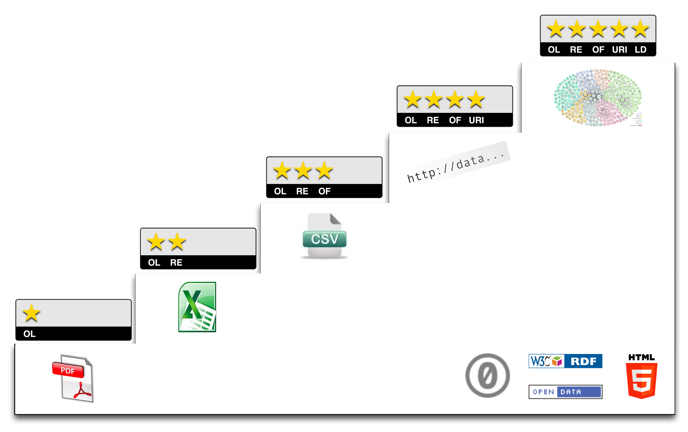
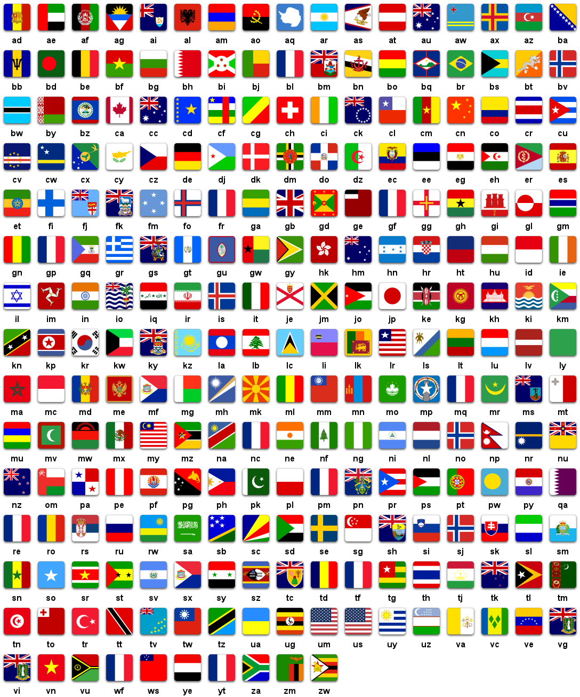

Improve your data
Lessons learned from analysis, explained with the science of information entropy
These slides were made with reveal.js . Watch out the slides go up and down as well as left and right!
You can navigate with arrow keys or hit escape for the overview.
The talk was originally presented at Open Data Manchester on 27/05/2014.
A more in depth discussion of these ideas can be found on the Infonomics blog .
Robin Gower
/
@robsteranium
What makes data good?
I'm often asked by data-owners for guidance on sharing data.
This has also come up at ODM.
I prepared a few suggestions.
And found a theme that linked them.
TBL's 5 Star Scheme

This scheme certainly provides a strategic overview (release early/ improve later, embrace openness, aim to create linked open data) but it doesn't say much about specific questions such as: how should the data be structured or presented and what should it include?
Increase Information Entropy
In writing this, it occurs to me that the general principle is to increase information entropy
Entropy in science refers the the number of ways a thermodynamic system can be arranged
Commonly though of as a measure of disorder or our lack of information about it
Isolated systems may never decrease in entropy
Uncertainty - range of possible states
Can count states in terms of binary digits, or bits
A letter has 26 possible states or 4.7 bits (2^4.7 = 26), add a bit for caps, three for numerals etc
Ultimately the entropy of a common word is lower than the product of it's characters because it is predictable.
Given that you know the word begins with a "q", what do you think the next letter will be?
What really increases entropy is number of characters, not swapping in punctuation etc
Entropy is this range of possible data states
Data resolves uncertainty
Quantity
Clarity
Novelty
[Information entropy](http://en.wikipedia.org/wiki/Entropy_%28information_theory%29) is a measure of the expected value of a message.
It is higher when that message (once delivered) is able to resolve more uncertainty.
That is to say, that the message is able to say more things, more clearly, that are novel to the recipient.
More is better than less
While it is (comparatively) easy to ignore irrelevant or useless data, it is impossible to consider data that you don't have.
If it's easy enough to share everything then do so. Bandwidth is cheap and it's relatively straightforward to filter data.
Those analysing your data may have a different perspective on what's useful - you don't know what they don't know.
This may be inefficient, particularly if the receiver is already in possession of the data you're sending.
Where your data set includes data from a third party it may be better to provide a linking index to that data, rather than to replicate it wholesale.
Indeed even if the data you have available to release is small, it may be made larger through linking it to other sources.
Link with code(lists)

BBC - MusicBrainz
http://www.bbc.co.uk/music/artists/5441c29d-3602-4898-b1a1-b77fa23b8e50
Positive network effects
There are positive network effects to data linking - the value of data grows exponentially as not only may it be linked with other data, but that other data may be linked with it.
Indeed, perhaps the most valuable data sources of all are the indicies that allow for linking between datasets. This is often called reference data - sets of permissible values that ensure that two datasets refer to a common concept in the same terms. The quality of a dataset may be improved by adding reference data or codes from standard code lists. A typical example of this is the Government Statistical Service codes that the ONS use to identify geographic areas in the UK (this is much prefered over area names that can't be linked because of differences in spelling that prevent - "Bristol" or "Bristol, City of", it's all [E06000023](http://statistics.data.gov.uk/explore?URI=http://statistics.data.gov.uk/id/statistical-geography/E06000023) to me!).
Mutually exclusive - no overlaps
If the codes overlap then they can't be compared and the offending codes will ultimately need to be combined.
Collectively exhaustive - no gaps
If the codes don't cover a significant category you'll have lot's of "other"s which will basically render the codelist useless.
Mutually Exclusive, Collectively Exhaustive
Normalise
Efficiency
Reliability
Integrity
Here I'm referring to [database normalisation](http://en.wikipedia.org/wiki/Database_normalization), rather than [statistical normalisation](http://en.wikipedia.org/wiki/Normalization_%28statistics%29).
If you have a table with two or more rows that need to be changed at the same time (because in some place they're referring to the same thing) then some normalisation is required.
A normalised database is one with a minimum redundancy - the same data isn't repeated in multiple places.
Look-up tables are used, for example, so that a categorical variable doesn't need to have it's categories repeated (and possibly misspelled).
Database normalisation ensures integrity (otherwise if two things purporting to be the same are different then how do you know which one is right?) and efficiency (repetition is waste).
Rail Passenger Survey Raw
It is already cross-tabulated (denormalised)
It's machine readble, but it's very difficult to parse (#page)
The variables are actually:
question, in green
answer, in red
sector/ or operating company, in blue
and of course count of responses (the actual data in yellow)
The same data can be normalised like this
And the aspects that were only identifiable by layout, are now codified into fields (columns)
Again the cases are duplicated for every comment on each case. The highlighted columns are all redundant.
This isn't a major problem here as the data clearly comes from a normalised system underneath.
In some circumstances, particularly where manual data entry is involved, this leaves scope for discrepancies.
Be Precise, allow user to simplify
There's no such thing as unsimplification
Don't categorise continuous variables unless you can't help it
This seems to be particularly common with Age.
The problem is, of course, that different datasets make different choices about the age intervals, and so can't be compared.
One might use 'working age' 16-74 and another 'adult' 15+.
Unless data with the original precision (e.g. yearly age bands) can be found, then the analyst will need to apportion or interpolate values in between categories.
If you have to categorise, do it after data has been collected
Categories that do not divide a continuous dimension evenly are also problematic.
This is particularly common in survey data, where respondents are presented with a closed-list of intervals as options, rather than being asked to provide an estimate of the value itself.
The result is often that the majority of responses fall into one category, with few in the others.
Presenting a closed-list of options is sometimes to be prefered for other reasons (e.g. in questions about income, categories might ellicit more responses) - if so the bounds should be chosen with reference to the expected frequencies of responses not the linear scale of the dimension (i.e. the categories should have similar numbers of observations in them, not occupy similar sized intervals along the range of the variable being categorised).
Once you've lost precision, you can't get it back
VIDEO
Represent Nothingness Accurately
Not available
Null
Zero
It's important to distinguish between different types of nothingness. Nothing can be:
Not available - where no value has been provided (the value is unknown);
Null - where the value is known to be nothing;
Zero - which is actually a specific number (although it may sometimes be used to represent null).
A blank space or a number defaulting to 0 could be any of these types of nothingness. Not knowing which type of nothing you're dealing with can undermine analysis.
Provide Metadata
Metadata is data about data. It describes provenance (how the data was collected or derived) and coverage (e.g. years, places, limits to scope, criteria for categories), and provides warnings about assumptions and their implications for interpretation.
Metadata isn't just a descriptive narrative. It can be analysed as data itself. It can tell someone whether or not your data is relevant to their requirements without them having to download and review it.
Increase Information Entropy
Open more data to resolve more uncertainty
Duplication leads to uncertainty
Normalised data - same variety, but smaller/ clearer
Precise data - more possible states
Accurate nothingness - don't leave questions
Metadata makes your data more certain
Don't interpret or summarise
These tips are all related to a general principle of increasing entropy. As explained above, [Information entropy](http://en.wikipedia.org/wiki/Entropy_%28information_theory%29) is a measure of the expected value of a message. It is higher when that message (once delivered) is able to resolve more uncertainty. That is to say, that the message is able to say more things, more clearly, that are novel to the recipient.
More data, whether in the original release or in the other sources that may be linked to it, means more variety, which means more uncertainty can be resolved, and thus more value provided.
Duplication (and thus the potential for inconsistency) in the message means that it doesn't resolve uncertainty, and thus doesn't add value.
Normalised data retains the same variety in a smaller, clearer message.
Precise data can take on more possible values and thus clarify more uncertainty than codified data.
Inaccurately represented nothingness also means that the message isn't able to resolve uncertainty (about which type of nothing applies).
Metadata makes the recipient more certain about the content of your data
Herein lies a counter-intuitive aspect of releasing data. It seems to be sensible to reduce variety and uncertainty in the data, to make sense and interpret the raw data before it is presented. To provide more rather than less ordered data. In fact such actions make the data less informative, and make it harder to re-interpret the data in a wider range of contexts. Indeed much of the impetus behind Big Data is the recognition that unstructured, raw data has immense information potential. It is the capacity for re-interpretation that makes data valuable.